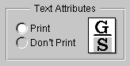

Copyright ©1995 by NeXT Computer, Inc. All Rights Reserved.
| 5 |
The Terminal Application
|
| Although you can run standard UNIX programs and commands on a NEXTSTEP computer, such programs aren't designed to be run directly from the workspace. Traditional UNIX constructs such as standard input and standard output, which many UNIX-style programs depend on, aren't part of the workspace interface.
To run these programs, you can use the Terminal application. Terminal offers a number of useful features: |
| Scrollers let you scroll backward to text that has already disappeared from the window. | ||
| Text can be copied and pasted within a Terminal window, between windows, or to and from other applications that support cutting and pasting, such as Mail and Edit. | ||
| Terminal has a Print command to let you print the contents of a window, and a Find command to let you search for text. | ||
| Terminal's Services menu lets you make interapplication requests, such as defining a word in Digital WebsterTMor searching for references in the Digital LibrarianTM. You can also define your own Terminal services for use in other appications. | ||
| Terminal's Preferences command allows you to change the size, title bar text, emulation characteristics, and font properties of one or more Terminal windows. | ||
| Terminal provides strict VT100TMterminal emulation. Every UNIX program or utility you run (such as Emacs or vi) should work as intended. |
| The rest of this chapter describes Terminal in more detail. |
| Introduction to Terminal |
| A UNIX shell is a program that functions as an intermediary between you and the UNIX operating system. As the shell runs, it prompts you for commands, interprets what you type, and passes the commands to the operating system for execution. For more information about the two most common UNIX shells, the Bourne Shell and the C Shell, see their UNIX manual pages (sh(1) and csh(1)).
You start Terminal (located in /NextApps) from the workspace as you would any other application, by double-clicking its icon in the workspace or by using the Workspace Manager's Preferences command to make Terminal start up when you log in. When Terminal starts up, it will (if configured to do so) create a new Terminal window using the default Preferences settings. You can create additional Terminal windows as you need them using the New Shell command. To change a window's characteristics, select the appropriate settings in the Preferences panel as described in the following section. |
| Setting Preferences |
| The Preferences command in the Info menu displays the Preferences panel, shown below. The Preferences panel lets you change values and set new default values for various Terminal options. For example, you can set the font properties of a particular window, or specify different default font properties to be used for new windows. This section describes the various preferences. The illustrations show the settings you start out with the first time you use the Terminal application. As you click in shell windows, the Preferences panel shows the settings for the main window.
Enter values and click buttons to specify new preferences, as described below. You may need to click Set Window to set the new preferences (or, click Set Default to make the new settings be the default settings or Show Default to show the currently defined default settings). New settings remain in effect until you change them. However, some Preferences settings affect only new windows but others affect existing Terminal windows as well. (Specifically, when no buttons appear at the bottom of the panel, settings are global and apply to all shell windows.) |
| Preferences options are divided into the following seven groups: |
| Window preferences | ||
| Title Bar preferences | ||
| VT100 Emulation preferences | ||
| Display preferences | ||
| Activity Monitor preferences | ||
| Shell preferences | ||
| Startup preferences |
| Each group of options is displayed in its own view in the Preferences panel. Select the view you want by clicking the button labeled Window at the top of the panel and dragging.
Window Preferences You can use the Window Preferences panel to set the size and font of one or more Terminal windows. If you click Set Window, the settings are applied to the Terminal window that's currently the main window. If you want the settings to apply to new windows, click Set Default. |
| The Columns and Rows fields specify values for the number of columns and rows. Even after setting the number of columns and rows, you can still resize the window, thereby changing the number of columns and rows for that window. |
| This field lets you specify what you want to have happen to a window when the shell running in it exits. In some special situations, a window might not obey the default setting. For example, double-clicking a command in the workspace results in a window that stays open even after the command finishes executing. |
| Use the Font field to specify a font for one or more Terminal windows as follows: |
| Click the Set button to open the Font panel. | ||
| In the Font panel, select a font (note that only fixed-width fonts are listed) and font size. Click the Set button in the Font panel to enter the settings in the Font field of the Preferences panel. | ||
| Click Set Window in the Preferences panel to set the font for just the main window, or click Set Default to make this font the default for new windows. |
| Title Bar Preferences
You can use the Title Bar view of the Preferences panel to configure the title bar of one or more Terminal windows. If you click Set Window, the new settings you specify are applied to the Terminal window that's currently the main window. If you want the settings to apply to new windows you create, click Set Default. |
| This field provides a number of elements that you can include in the title bar of Terminal windows, including a "custom title" element that you define yourself. Any combination of elements can be used. If no elements are selected, the title that's used is simply Terminal. |
| To specify a custom title, enter it in the Custom Title field. The custom title is used in the title bar, however, only if you click the Custom Title box in the Elements field above. |
| As you experiment with various combinations of elements, the sample title bar displayed in the Preferences panel is updated to show the effect of the current settings.
VT100 Emulation Preferences The VT100 Emulation view is used to set the VT100 characteristics of Terminal windows. |
| "Translate newlines to carriage returns when pasting" should normally be checked. It's required by some other operating systems, and it works correctly for most UNIX programs.
If "Generate VT100 codes from the keypad" is checked, the keys on the numeric keypad generate VT100 keypad sequences. Otherwise, the keys on the numeric keypad generate the characters shown on the keys. Holding down the Alternate key while pressing a key on the numeric keypad toggles the interpretation temporarily. If "Perform strict VT100 emulation" is checked, some additional (and normally undesirable) aspects of VT100 emulation are strictly enforced: |
| If you type a Delete character at the left edge of a Terminal window, the command-line cursor won't wrap around to the end of the previous line. This may make it difficult to edit long command lines that wrap. | ||
| Strict DECCOLM handling is enforced. Otherwise, the DECCOLM escape code to change the window's size is obeyed only if the new size is larger than the old size. | ||
| The + key on the numeric keypad generates a comma (,) character. |
 |
| When "Alternate key generates Escape sequences" is selected, typing a character while you hold down the Alternate key causes a two-character sequence to be generated--an Escape character followed by the character you typed. (This is useful when running Emacs, so you can use the Alternate key as a Meta key). Click "Alternate key generates special characters" if you want Alternate key combinations to generate a single character with the high bit set. Some programs interpret special characters in their own way, so this doesn't always work as expected; Emacs, for example, simply strips out the high bit from special characters.
Note: If necessary, you can specify a character other than Escape as the first character in a two-character sequence. To do so, use the dwrite shell command to set the value of the Terminal Meta variable to the decimal value of the desired character.
Display Preferences The Display view of the Preferences panel is used to set various display characteristics of one or more Terminal windows. If you click Set Window, the new settings you specify are applied to the Terminal window that's currently the main window. If you want the settings to apply to new windows you create, click Set Default. |
| If the Enabled box is checked, windows retain text that scrolls off the top of the window in a scrollback buffer, allowing text that's scrolled off the window to be scrolled back into view, copied, or printed. Otherwise, text that scrolls off the top of the window can't be retrieved.
If you enable the scrollback buffer, you can choose to let it grow without limit or you can specify the maximum number of lines that you want saved. Whichever you choose, you can use the Edit menu's Clear Buffer command at any time to clear the buffer. Although it's often useful, the scrollback buffer adds to the amount of memory that's used by the Terminal program, and is unnecessary in some Terminal windows (for example, one that's running a text editor such as Emacs rather than a UNIX shell). |
| If the "Wrap lines that are too long" box is checked, characters that would extend beyond the right edge of the window wrap around to the beginning of the following line. Otherwise, each line of text occupies only one line in the window--the last character that fits on a line gets overwritten by subsequent characters that appear on that line.
If the "Scroll to the bottom of the window when input is received" box is checked, typing in the Terminal window causes the window to scroll to the end of the buffer and display the insertion point (of course, if the insertion point happens to be already visible and positioned at the end of the buffer, no scrolling occurs). Otherwise, typing never causes the window to scroll automatically.
Activity Monitor Preferences Normally, Terminal tries to determine whether your Terminal windows are in active use (busy) by keeping tabs on the processes inside them. If Terminal thinks something interesting is going on inside a window, it marks the window with a broken X. As with unsaved document windows in other applications, you'll be prompted for confirmation before closing a busy window or quitting Terminal when there are busy windows.) To determine whether a window is clean (not busy), Terminal looks at information about processes it considers relevant. For example, Terminal considers shells and a few other processes such as su to be innocuous and in general will not mark windows busy on account of them. Occasionally Terminal may be wrong about whether a window is clean or not. |
| You can designate additional clean command names in the Clean Commands list (likely candidates are rlogin and telnet, shown here). Commands you specify in this list aren't used in determining whether a window is busy or clean. |
| Click this button if you want to enable or disable activity monitoring. When activity monitoring is off, Terminal always asks for confirmation before letting you quit. |
| Click this button if you want to specify whether or not background processes are considered relevant in determing whether a window is clean. For example, a window running a background process could be considered clean, as long as the process is running happily in the background. (The current process or one that you've explicitly suspended with Control-z will always cause the window to be classified as busy.)
Note: Terminal can't respond to processes running on other machines, so you shouldn't rely on Terminal's process monitor when logged into a remote system.
Shell Preferences The Shell view of the Preferences panel is used to specify a shell or other program to be run in Terminal windows. |
| Use the Shell field to specify the absolute pathname of a shell or program to run on startup. Possible values include /bin/csh, /bin/sh, /bin/gdb, /usr/bin/emacs, and /usr/ucb/vi.
Note: You must press the Return key after entering the pathname in order for the new value to be set. |
| If the "Read login script" box is checked (and you're using csh), Terminal runs your .login file for each new Terminal window you open. Otherwise, the .login file is ignored.
Startup Preferences The Startup view of the Preferences panel lets you specify what happens when Terminal starts up. |
| When Terminal starts up you can have it do nothing (that is, create no windows), create one new shell window, or open a startup file (that is, a configuration file that specifies a collection of windows to open). If you select "Open the startup file," you need to make sure a startup file is specified in the Startup File portion of the panel, described below.
For information about how to create a startup file, see "Saving a Terminal Configuration for Later Use." |
| Click here if you auto-launch the Terminal application and want it to be hidden initially. This button has no effect if you don't auto-launch Terminal. |
| Although you can have any number of Terminal configuration files in your ~/Library/Terminal directory, you can specify only one as the startup file. To specify a particular Terminal configuration file as the startup file, type its pathname in the Path field or click Set to open an Open panel in which to select the pathname.
Note: The pathname you enter must be an absolute pathname beginning with a slash (/); characters such as ~ won't work. |
| Saving a Terminal Configuration for Later Use |
| Information about a window or set of windows can be saved to a file, allowing you to save your preferred configurations for later use. Everything about each window is saved except the contents of the scrollback buffer--this includes the shell, the size and location of the window on the screen, the title bar and font characteristics, and whether or not the window is miniaturized. To save a configuration, choose Save (or Save As) in the Shell menu. Terminal appends a .term file extension to the file name you specify. Since Terminal looks for configuration files in your ~/Library/Terminal directory, this is where you should save them. |
| When you first save the configuration (or whenever you choose Save As), you can choose whether you want just the main window or all windows saved to the file.
Once a window is associated with a file, you can use the Save command to flush the settings out again without seeing a Save Panel, just as with other documents. However, if more than one window belongs with that file, all the relevant windows will be resaved (the menu item indicates this by changing to Save Set). This allows you to open your favorite set of files, rearrange the windows, then just choose Save to save them all back into the file. There is no way to select a subset of the currently open windows to go into a new file. To open a configuration file, choose Open in the Shell menu. To have a configuration file open automatically each time you start up Terminal, either check the box in the Save or Save As panel, or specify the filename in the Startup view of the Preferences panel. |
| Printing the Contents of a Terminal Window |
| To print all or part of the text in a Terminal window, open the Print panel by choosing Print in the main menu. Terminal's Print panel is similar to the standard NEXTSTEP Print panel, but there are two options not contained on the standard panel. |
|  |
| Click the Print button or the Don't Print button to specify whether or not text attributes (underlining and highlighting) are included in the printed output. Print indicates that text attributes appear in the output; Don't Print indicates that the text attributes won't appear. |
| Click one of the three Range buttons to specify the range of text to be printed. All indicates that the entire contents of the scrollback buffer should be printed. Selection indicates that the selected text, whether visible or not, should be printed. Visible indicates that the text that's visible in the window should be printed. |
| Finding Text in a Terminal Window |
| The Find panel lets you search for text in the main Terminal window. To open the Find panel, choose Find Panel in the Find menu. |
| The Find panel locates the next occurrence of a specified string, and can search either forwards or backwards. In the Find field, enter the string to search for. The controls in the Find panel have these effects: |
| Control | Effect | |
| Next | Selects the first occurrence of the Find string following the current selection or insertion point. (Pressing the Return key has the same effect, but with one difference: If you've used the keyboard alternative to display the panel, pressing Return causes the panel to disappear instead of remaining on the screen.) | |
| Previous | Selects the first occurrence of the Find string, searching backward from the current selection or insertion point. | |
| Ignore Case | Makes the find operation case-insensitive (that is, capitalization is ignored when determining a match). If this box is unchecked, the search is case-sensitive. |
| If the end of the text is reached, Find continues searching from the beginning (conversely, when searching backward, if the beginning of the text is reached, Find continues searching from the end).
If no instance of the Find string is located, Terminal beeps and the message "Not Found" appears in the Find panel. Commands in the Find menu (which is in the Edit menu) provide alternatives and shortcuts to using the Find panel. There's also a Jump to Selection command for scrolling the insertion point into view. For more information, see "Terminal Command Reference" at the end of this chapter. |
| Defining Services for Use in Other Applications |
| Although by default Terminal doesn't make services available to other applications via the Services menu, Terminal does contain a Terminal Services panel that you can use to define any services you want Terminal to provide.
To open the Terminal Services panel, choose Terminal Services in the Info menu. If no Terminal services are defined, you'll see a panel asking if you want to load a set of example services. You may find it useful to load and examine this set of examples, and then remove any you don't want to keep. |
| Currently defined services are listed in the list at the top of the panel. You can add new services, as well as redefine or delete existing commands. |
| To add a service, click the New button. A new entry named New Service #1 is added to the service list. Type the name that you'd like to appear in the Services menu, and then configure the service using the controls in the Terminal Services panel. When you're done, click OK. | ||
| To delete a service, select it and click the Remove button. | ||
| To modify a service definition, select its name and then redefine the service using the controls on the Terminal Services panel. When you're done, click OK. |
| The Accept field lets you specify what type of data the service accepts. Click one or more of these buttons as appropriate.
The Use Selection field lets you specify whether the selected text should be used as a command-line argument, or as input to the service. Click one or the other as appropriate. The Execution field lets you specify various options that affect the execution of the service, such as whether the output is returned or discarded. When defining the service, you can use the tokens %s and %p to refer to the locations where the selection and prompted input are inserted, respectively. Prompted input isn't requested unless %p appears in the definition. |
| Terminal Command Reference |
| The following sections summarize the menus and commands available in Terminal.
Commands in the Main Menu Terminal's main menu contains the standard Print, Windows, Services, Hide, and Quit commands. The other commands and the submenus they open are described in the sections that follow. Several standard commands are discussed here only in terms of their particular use in Terminal.
Commands in the Info Menu Terminal's Info menu provides the standard Info Panel command, plus the following commands. |
| Command | Description | |
| Preferences | Opens the Preferences panel. See "Setting Preferences." | |
| Terminal Services | Opens the Terminal Services panel. See "Defining Services for Use in Other Applications." |
| Commands in the Shell Menu
Terminal's Shell menu provides the following commands. |
| Command | Description | |
| Open | Opens an existing shell window or set of shell windows that have previously been saved in a file using the Save (or Save As) command. | |
| New | Opens a new shell window, using the default settings. | |
| Run Command | Displays a panel in which you enter a UNIX command to be run. The command is run in a new Terminal window. (The command is displayed as the title of the window; when the process running in the window has completed, the title changes to "Dead Terminal.") | |
| Save, Save As | Saves a window or set of windows to a file, allowing you to save and reuse your preferred configurations. See "Saving a Terminal Configuration for Later Use." | |
| Set Title | Displays a panel for you to edit and set the current title of the window. The Preferences panel allows greater control over this--you can combine your own text with Terminal's automatically updated information. See "Title Bar Preferences" for more information. | |
| Steal Keys | Allows you to effectively debug an application from a shell window in which the GNU debugger is running. The debugging process frequently involves alternately activating Terminal (to type debugger commands) and the other application (to test the application being debugged). However, clicking to alternatively activate and deactivate the application being debugged causes the application to change its state in unpredictable ways. | |
| To let you get around this problem, the Steal Keys command puts Terminal in a special debugging mode. In this mode, Terminal can be activated or deactivated simply by moving the cursor into or out of the Terminal shell window. Therefore, you can easily activate Terminal whenever you want to type a debugger command, without clicking and thus affecting the state of the application you're debugging. | ||
| When you're ready to exit debugging mode, click in the Terminal window to make the Terminal main menu reappear, and then choose this command again (its name will have changed to Yield Keys). | ||
| Page Layout | Displays the standard Page Layout panel, which lets you choose among various paper sizes, scaling factors, and orientations for text printed from the main window. |
| Commands in the Edit Menu
Terminal's Edit menu provides the standard editing and text-searching commands, which can be used for finding and editing text in a Terminal window. |
| Command | Description | |
| Cut, Copy, Paste | These commands let you copy or move text, either between Terminal windows or between a Terminal window and another window that supports copying and pasting. To duplicate text, select the text and choose Copy. To insert the most recently cut or copied text at the Terminal window's command-line cursor location, choose Paste. | |
| Copy puts a copy of the selected text onto the pasteboard, from where it can be pasted with the Paste command. The pasteboard holds just one selection; each Copy operation overwrites the previous contents of the pasteboard. | ||
| Note: Cut is always disabled. The only way to remove text from a Terminal window is to use the Clear Buffer command. | ||
| Find | Displays a menu that contains commands for finding text, as described below in "Commands in the Find Menu." | |
| Clear Buffer | Removes text from the scrollback buffer, leaving just the current command line. | |
| Select All | Selects all the text in the main window. This is useful, for example, when you want to copy the entire range of text to another application, such as Edit. |
| Commands in the Find Menu
The Find menu contains commands that let you search for text in the main Terminal window. |
| Command | Description | |
| Find Panel | Opens the Find panel, which allows you to locate the next occurrence of a specified string. For more information, see "Finding Text in a Terminal Window." | |
| Find Next, Find Previous | These are the standard Find menu commands. The Find Next command performs the same function as the Next button in the Find panel, and Find Previous is the same as the Find panel's Previous button. | |
| Enter Selection | Copies the selected text in the main window into the Find panel's Find field, even if the Find panel isn't open or the key window. | |
| Jump to Selection | When the insertion point or current text selection isn't showing in the main window, the Jump to Selection command scrolls it into view. If there's no insertion point or current text selection, this command scrolls to the end of the buffer. | |
| Note: Clicking in a Terminal window positions the insertion point where you clicked. However, the insertion point isn't visible since it's not possible to perform any copy or paste operation on it. This may cause some confusion, since the Jump to Selection command may sometimes jump to a location that doesn't appear to have any selected text associated with it. |
| Commands in the Font Menu
The Font menu contains the standard Font menu commands described in the User's Reference Manual. However, these commands apply to the entire contents of the Terminal window, not just to selected text. |
| Command | Description | |
| Font Panel | Displays the standard Font panel, which lets you choose among various fonts, typefaces, and font sizes. However, only fixed-width fonts, such as Courier and Ohlfs, can be used in Terminal. Also note that Ohlfs is strictly a screen font--text displayed in Ohlfs prints as Courier instead. | |
| Bold, Italic | Makes the text in the main Terminal window become bold or italic. | |
| Larger, Smaller | Makes the text in the main Terminal window become larger or smaller. | |
| Copy Font, Paste Font | Copy Font copies the font settings of the main window, so that you can paste them into another window with the Paste Font command. |